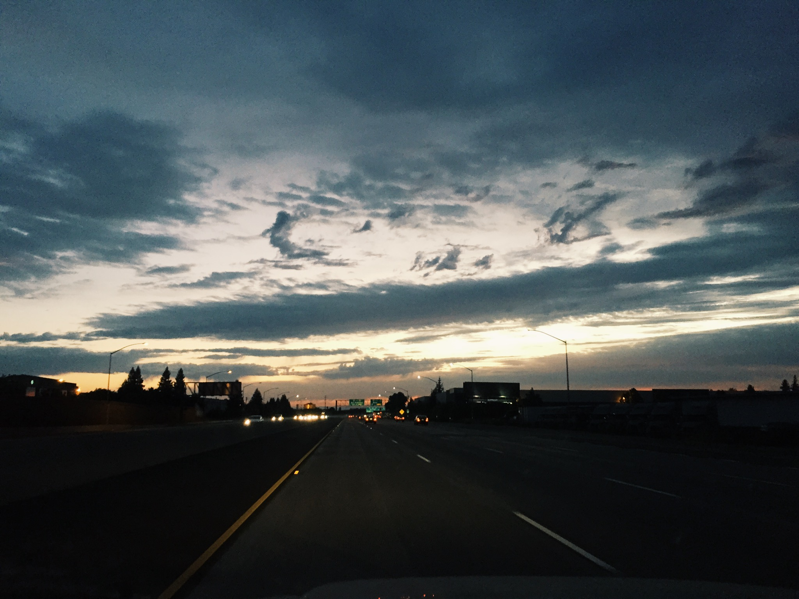

Absurdism — the conflict between the human tendency to seek inherent value and meaning in life and the human inability to find any in a purposeless, meaningless or chaotic and irrational universe.
The Concept
Simply put, absurdism is frustration with the fact that we live in a purposeless, chaotic world. Not necessarily a defeat, but merely grappling with the credence that there is no ultimate meaning to life, that things happen for no apparent reason and carry no significance behind them whatsoever.
My sophomore year of college, I met someone. As much as I wanted it to be romantic, it wasn't. But there was something different about him, so I decided to stick around and try to find out what it was that drew me in so deep. After a year of getting to know each other, he opened up about his depression.
Everyone has a different narrative as to how they came about depression. Some are struggling to cope with their own past traumas, some inherit their parent's trauma and never fully understand it, and some come to the realization of absurdism and have a hard time swallowing its truth.
This one was an example of the latter. A direct quote from him reads "no one instance can be defined. And I just know in whatever amount of time, I will be dead and nothing in my life will have ever mattered at all. And you can't argue against that. In 300 years from now, I will not ever be remembered for anything, as will almost no one. That's why life is so meaningless."
 Doe Library, UC Berkeley
Doe Library, UC Berkeley
It hurt me to hear this from someone who I had, for the past year, slowly started to fall in love with. I felt so guilty that he had felt like he had no one to live for, no one to leave him with any significant memories that would convince him that life was worth living. Surely, this had to be a result of him not having even one person who cared about him enough to make him believe that our interpersonal relationships were what make up our significance.
Allocating the Proper Fucks to Give
I spent the next year trying to find ways to convince him of the joy and beauty of life, even though I didn't fully believe in it myself just yet. I was still naive to the concept of absurdism but not familiar enough to the point where I truly believed that life was not worth living. Over this year, I paid special attention to the people in my life and questioned the reasoning behind my actions.
When I would make plans with someone, I'd go over the grounds for why I've decided to keep this person in my life. When I chose to forgo studying one weekend in exchange for a music festival or a spontaneous trip to another city, I would evaluate the cost-benefit analysis as to why I made this decision, and if I would still be happy with it in the next few days, months, or years.
As a result, I fine-tuned my value system and determined the metrics I used to fulfill them (with the help of a few books + late night conversations with close friends). With this system of values held so closely, I easily learned how to not sweat the small stuff and only focus my energy on the parts of my life that were aligned with my intrinsic values. In other words, I learned to find significance in the important things, and weed out the toxic, trivial things.
What does that have to do with absurdism? Well, to be quite honest with you, absurdism is right. There is no true meaning to life. We make up less than 0.00000001% of the universe. We live for less than 0.000000001% of the universe's lifetime. In the scope of the universe, we as individuals carry no significance from the day we are born to the day we die. That is to say, we simply exist to die.
 Chasing for a Feeling of FulfillmentBut, what does that say about us if we're still here? What does it say about the fact that we have yet to observe other forms of life other than ours on this very Earth, and yet we know that we are here, right now, at this exact moment, existing?
Let's think about this for a second. If we have no power to make a worldly impact, then maybe we were only meant to make an impact on the reachable people around us in the way we treat one another. Perhaps the metric we use to determine our impact is the number of people who will miss us when we die. Maybe another metric would be how many people remember us as either lessons or blessings in their lives. At the end of the day, in this dark, cruel, and lonely world, all we have is each other, so maybe if nothing we do matters, then all that matters is what we do.
I have learned over the past few years that sometimes I do things, or things happen to me, for no apparent reason whatsoever. Sometimes, unfortunate events just get to you, and sometimes, you're blessed with a lucky draw of the cards. But it's up to you as to whether or not you want to place significance on these events, and that's entirely decided by the way you choose to react.
People come to terms with the idea of absurdism in 3 ways: suicide, religious, spiritual, or abstract belief in a transcendent realm, being, or idea, or acceptance of the absurd.
So here we are, two people who have chosen the third option, but in completely different approaches. We've both accepted the fact that life is inherently meaningless, but we've decided to react to that acknowledgment in separate ways. You can follow one approach which is to swallow the truth and fixate on it, or you could try the other where you learn to find significance in the little things that bring you happiness and fulfillment.
White Ferrari
It's been 3 years since I've met him, 2 years since he broke my heart, and 1 year since I've gotten over him. Although I sometimes felt like I wasted 3 years of my college career pining after someone who wanted to do nothing but hurt me, I've only ever wanted to thank him. Regardless of the fact that I didn't get what I originally wanted, I got something even better: a clear sense of my purpose on this Earth. In the four years I spent at this wonderful institution, no other lesson could ever live up to this one. And I am forever grateful.
Watch the Clouds (or Lack Thereof) FloatAnother way I got over him and came to terms with our fundamental differences that got in the way of our future together, and this is somewhat related to absurdism, was my fascination with the multiverse theory. The multiverse is a hypothetical set of parallel universes, including the one we've observed (our own!). In some of these universes, my alternate self could be living my best life, my worst life, or something in between, and this would only matter to me if I believed in the significance of these other dimensions. This would also mean that there might be some universe where we worked out and ended up together as I had wished for a few years ago. But in order for us to have lasted in some other universe, we would have needed to have failed in this one.
Revisit the multiverse theory for whenever you feel like you've been handed the short stick in life, whether or it comes to you missing out on that promotion, losing the so-called love of your life, or whatever else you find bringing you down. Find solace in the fact that there might be another you in some other dimension who has lived some of your darkest days and you need to live some of theirs as well.
Or don't. Don't succumb to the premise that it couldn't happen in this universe in order for it to have worked out in some other parallel universe. Maybe, instead, turn the idea that if it was meant to be, it would have worked out in this universe, certainly in another, and hopefully all the others. It's up to you. In an inherently purposeless world, there are no rules. You exist solely to create them.
So, to the reader of this blog, I invite you to reevaluate your value system and the metrics you use to fulfill them. Find out why you enjoy the people in your circle, why you have fun at the events you choose to go to, and why you do or don't feel fulfilled at the end of the day.
Maybe it doesn't even matter since we're all going to die anyway, although I'd like to think you're missing out on some of life's greatest miracles if you don't give yourself the pleasure of creating your own "meaning" in this meaningless world. But that's the beauty of absurdism–the choice is entirely yours.